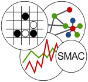
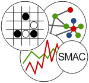

IODA NetLogo Tutorial
Direct links to other parts of the IODA NetLogo Manual: General Documentation FAQ Dictionary
Introduction
In what follows, we assume that you are already familiar with the NetLogo platform and with the NetLogo programming language. Installation issues for the IODA NetLogo extension are discussed in the General Documentation.
The IODA methodology is aimed at facilitating the design of agent-based simulations, and also at enhancing reusability, model revision and bias elicitation. The examples provided in this tutorial will help you to get into IODA step by step, starting with very simple behaviors, and going up to subtle refinements in the interaction selection process. Thus, this tutorial is also a IODA programming guide . We suggest that you follow this tutorial in sequence, since important IODA concepts and programming techniques are presented throughout this page.
Table of contents
- Particles: or, What's different in IODA?
- Termites Revisited
- Termites with only agents
- A simple ecosystem
- Leap years, or: New features since v 2.2
- Pheromones, or: Target Selection Policies
- Ants and food Revisited: Your turn to work!
- Tuning perception: Enhancements since v 2.3
- Conway's Life, or: a Cellular Automaton with IODA?!??
- Explosion and multi-target interactions
- Description
- The default selection policy:
RANDOM - Interaction-first selection policy:
RANDOM-INT - Property-driven selection policies:
BEST,PRORATAandALL-BEST - "Multicast" interactions:
ALL,NUMBERandFILTER - Recommendation for the use of target selection policies
- A parenthesis: specifying an alternative metric
- Advanced features: reflection and meta-interactions
- Other code examples in the
tutorialsdirectory - Contact information & authors
- Terms of use
Tutorial #1: Particles, or: What's different in IODA?
Moving particles: from NetLogo to IODA-NetLogo
Let's start with a simple problem: we want to model particles moving randomly. The corresponding NetLogo code is quite simple:
to setup
clear-all
set-default-shape turtles "circle"
crt 1000 [ setxy random-xcor random-ycor
set color red ]
reset-ticks
end
to go
ask turtles [ wiggle ]
tick
end
to wiggle
set heading random 360 fd 1
end
Since IODA is a generic methodology, it is not really convenient for such a simple simulation, because it requires a bit more code in that case. Yet, we are going to IODA-ify this model to explain the differences between the IODA approach and ad-hoc modelling.
The first step in IODA consists in identifying agents:
here, we have only turtles.
Then, we must identify interactions , i.e. abstract conditions/actions rules that describe the behaviors of the agents. An interaction involves a source agent (which performs the interaction) and one (or more) target agents (which undergo the interaction). It is composed of:
- a sequence of actions which are the commands that the source and the target have to execute
- a list of conditions (possibly empty) that must be fulfilled by the source and/or the target to allow the execution of actions
- a list of triggers (possibly empty) which describe why the source or the target are involved in the interaction, and must also be fulfilled.
In the current case, the turtles just have to move randomly, without any restriction. Thus we have to define but one interaction, for instance
MoveRandomly, which contains only a single action:wiggle(without any condition or trigger). Put the following lines in a text file named "interactions.txt":interaction MoveRandomly actions wiggle end
Now, you have to specify what interactions can be performed by agents. Thus, you must define an interaction matrix , which assigns interactions to source and target agents.
Here, the agents (turtles) can only perform the
MoveRandomlyinteraction. Additionnally, each turtle moves by itself: the target agent of the interaction is actually the same as the source. This is called a reflexive interaction.Put the following lines in a text file named "matrix.txt":
turtles MoveRandomly 0
This means any turtle can perform interaction MoveRandomly with
itself as a target. The "0" is the priority level of the
interaction, from the point of view of the source agent (here it does
not matter since there is only one interaction).
Now you have to write some code to build the simulation. First, you
must use the IODA simulation engine provided in the IODA extension
folder, and the ioda extension for NetLogo.
Put a copy of
IODA_2_3.nlsin your own folder and rewrite your procedures as follows:__includes ["IODA_2_3.nls"] ; include file for the simulation engine extensions [ioda] ; the ioda extension itself to setup clear-all set-default-shape turtles "circle" crt 1000 [ setxy random-xcor random-ycor set color red ] ioda:setup ; initialization of the simulation engine reset-ticks end to go ioda:go ; one step of the IODA simulation tick end to wiggle set heading random 360 fd 1 end
The ioda:setup command initializes the IODA parameters of
the simulation, while the ioda:go runs one simulation step in
IODA. Though, if you press the "go" button, nothing happens.
Indeed, at this time you did not specify the IODA model to use,
i.e. you did not specify any interaction nor interaction matrix in
your NetLogo program.
Rewrite your
setupprocedure as follows:to setup clear-all set-default-shape turtles "circle" crt 1000 [ setxy random-xcor random-ycor set color red ] ioda:load-interactions "interactions.txt" ioda:load-matrices "matrix.txt" " " ioda:setup reset-ticks end
Now, your interactions and your interaction matrix are automatically loaded into the NetLogo program. Unfortunately, if you press "go" at this time, you get an error message:

Figure 1: Screenshot of the NetLogo exception.
Indeed, in IODA, the interactions make use of abstract
primitives (here, wiggle), which must be instantiated
into concrete primitives. Concrete primitives depend on the
breed of the agent: thus, in that example, the wiggle abstract
primitive is run by turtles, hence it must be renamed
turtles::wiggle.
Rename the
wiggleprocedure:turtles::wiggle.Congratulations! Your program should now run correctly and produce the same result as the ad-hoc NetLogo program.
Adding behaviors: NetLogo vs. IODA-NetLogo
Now, we are going to modify the behavior of our turtles as follows: when a turtle perceives another turtle "in radius" 1, the first turtle kills the other one. A turtle may kill at most one other turtle per tick. If it kills no turtle, it just keeps moving randomly.
First, let's examine the classical go procedure that answers those
specifications:
to go
ask turtles
[ let n other turtles in-radius 1
ifelse (any? n)
[ ask one-of n [ die ]]
[ wiggle ]
]
tick
end
The behavior is still quite simple; nevertheless, this modification
requires to re-write the go procedure and to introduce ifelse
cascades, which would not be very convenient for more sophisticated
behaviors.
At the opposite, in the IODA version, the go procedure does not
change. Instead, you have first to define a new interaction, which
consists in making the target of the interaction die.
Add the following lines to file "interactions.txt":
interaction Delete actions target:die endNote: in the definition of an interaction, abstract primitives (reporters or commands) are always evaluated and run by the source agent (which owns a reference to its potential or actual target), unless they begin with the
target:keyword as above.
Then, you have to change your interaction matrix to take into account
the Delete interaction: it can be performed by any turtle on any
other turtle, within a distance less or equal to 1.
Add the following line to file "matrix.txt":
turtles Delete 1 turtles 1This line can be read as follows: Turtles can perform interaction Delete with priority 1 on other turtles with distance ≤ 1
As you changed the matrix file, the agents can perform or undergo new interactions. Thus, you certainly have to write additional primitives for your turtles. Fortunately, the extension can tell you what remains to write.
Push the "setup" button, to ensure your model is loaded. Then, type in the command center:
observer>print ioda:primitives-to-write to turtles::filter-neighbors end to turtles::die end
The procedure turtles::die is required because of the target:die
item in the Delete interaction, which means that the target (namely
here, a turtle) must implement a concrete primitive for die.
Add the following procedure to your program:
to turtles::die ioda:die end
Note: You MUST NOT use the NetLogo die primitive in a
IODA primitive because the IODA simulation engine has its own
scheduler. By using ioda:die instead, you ensure that the agent is
considered dead (through a convenient attribute), and that it will be
actually removed from the NetLogo simulation at the end of the
ioda:go procedure.
The other procedure (turtles::filter-neighbors) is required for
perception. Indeed, turtles now need to have a look on other agents
so as to interact with them: thus you need to specify how neighboring
agents are perceived.
We assume here that turtles perceive their neighbors in a circle of radius 1. Then we can use a IODA built-in command:
to turtles::filter-neighbors ioda:filter-neighbors-in-radius 1 end
Now, you can ensure that all concrete primitives have been written
(click the "setup" button and print ioda:primitives-to-write again,
which should print nothing at all) and run your model by clicking the
"go" button. It works!
At this point you may feel that a lot of work is required to obtain
the same results as in the ad-hoc model. Nevertheless, you will soon
discover that for more complex models, which require for instance a
step-by-step design, possibly with backtracks or deep modifications
(e.g. example 14-age of crisis in this section), the separation
between the simulation engine on the one hand, and the primitives of
the agents and the abstract definition of the interactions on the
other hand, will prove a source a speed-up in you design process, and
prevent bugs related to complex ifelse cascades.
Tutorial #2: Termites Revisited
This second step in getting familiar with IODA consists in re-implementing the classic "Termites" NetLogo model. In that model, a wandering termite can pick a wood chip up, wander again, and when it encounters another wood chip, it searches for an empty place and puts its load down. In the example that comes with the NetLogo Models Library, the wood chips are patches. Thus we have only one kind of agents (the turtles which play the role of termites).
The backbone of the simulation program
First, you have to sketch your program as previously.
__includes ["IODA_2_3.nls"] extensions [ioda] to setup clear-all set-default-shape turtles "bug" create-turtles 50 [ setxy random-xcor random-ycor set color white ] ask n-of 500 patches [set pcolor yellow] ioda:load-interactions "interactions.txt" ioda:load-matrices "matrix.txt" " " ioda:setup reset-ticks end to go ioda:go tick end
Definition of the interactions
Now we have to define possible interactions, by decomposing the activity of the agents into coarse-grained, abstract and coherent sequences:
MoveRandomly: the same as in previous sectionPickUp: if a wood chip is present and the source agent does not carry anything, it can pick a chip upFindEmptyPlace: it has the same effect thanMoveRandomly, but is triggered by the presence of a wood chipPutDown: the source agent puts a wood chip down, if nothing is already at this place
Put the following lines in a text file named "interactions.txt"
interaction MoveRandomly actions wiggle end interaction PickUp trigger not:empty-here? condition not:carrying? actions take-load get-away end interaction FindEmptyPlace trigger not:empty-here? condition carrying? actions wiggle end interaction PutDown trigger something-nearby? condition carrying? empty-here? actions drop-load random-turn get-away end
Please note the following IODA features:
- We introduced the
not:keyword which inverts the result of a trigger/condition primitive. - Some interactions contain 2 items in addition to the actions:
- the trigger represents the motivation or implicit goals that lead to choose the interaction,
- the condition represents physical or logical prerequisistes that must be fulfilled to execute the actions.
From an operational point of view, there is not much difference
between trigger and condition, since ALL primitives found in both must
return true to allow the interaction to be selected. The distinction
makes sense from a knowledge representation viewpoint. For instance,
the PickUp interaction is triggered by the perception of a wood
chip (not-empty-here?), which means that the termite tries to
perform PickUp because its perceives a wood chip (in order to
carry it somewhere); yet, the actions of the interaction cannot take
place if its condition is not fulfilled, namely the termite must not
already carry any wood chip (not-carrying?). Anyway, if you
hesitate, put your tests where you want…
The interaction matrix: the role of priorities
You also have to define an interaction matrix. In that case, you only have one kind of agents, and their interactions are reflexive all the time (you could do exactly the same simulation with only one turtle!). Thus, you have litle to do but think about the priorities of interactions, i.e. if all interactions have their trigger and condition fulfilled, what will the source agent perform?
It appears that the turtle should first try to pick a wood chip up; if not possible, to find an empty place if it is already carrying a wood chip; if not possible, try to put the wood chip down; finally, the random move is the default behavior.
Put the following lines in a text file named "matrix.txt".
turtles MoveRandomly 0 turtles PutDown 10 turtles FindEmptyPlace 20 turtles PickUp 30Note: the exact values of priorities have no importance. What is taken into account is the resulting order relation.
From abstract to concrete primitives
Finally, you have to write several primitives:
observer>setup observer>print ioda:primitives-to-write to-report turtles::something-nearby? end to-report turtles::carrying? end to-report turtles::empty-here? end to turtles::take-load end to turtles::wiggle end to turtles::drop-load end to turtles::random-turn end to turtles::get-away end
Copy-paste those empty primitives to you program and define them. You can try to find what they should do in this model.
Then, compare your proposal to the solution we suggest:
- add after the
extensionsline:turtles-own [carrying?]- add in the initialization of the turtles:
set carrying? false- define the concrete primitives through the code below:
to-report turtles::something-nearby? report any? neighbors with [pcolor = yellow] end to-report turtles::carrying? report carrying? end to-report turtles::empty-here? report pcolor = black end to turtles::take-load set carrying? true set color red set pcolor black end to turtles::wiggle left random 50 right random 50 fd 1 end to turtles::drop-load set pcolor yellow set carrying? false set color white end to turtles::get-away fd 20 end to turtles::random-turn right random 360 end… and try it !
Tutorial #3: Termites with only agents
The IODA methodology states that all relevant entities of the model must be agents: thus the latter case is not completely IODA-compliant, since patches are considered a mere discretization of the environment. But, why not use true wood chips instead? Then, we have two kinds of agents: termites of course (a NetLogo breed), buts also chips (another breed).
Initial program
Here is the squeletton for this new simulation:
__includes ["IODA_2_3.nls"] extensions [ioda] breed [ termites termite ] breed [ chips chip ] termites-own [carrying?] to setup clear-all set-default-shape termites "bug" set-default-shape chips "line" create-termites nb-termites [ init-termite ] create-chips nb-chips [ init-chip ] ioda:load-interactions "interactions.txt" ioda:load-matrices "matrix.txt" " \t" ioda:setup reset-ticks end to init-termite setxy random-xcor random-ycor set color white set carrying? false end to init-chip setxy random-xcor random-ycor set color yellow end to go tick ioda:go end
More details on the interaction matrix
Now, we can examine the model of the previous tutorial to find out the
consequences of the "agentification" of the wood chips. Especially, it
appears that several abstract primitives, such as empty-here? or
something-nearby?, rely implicitly upon the perception of a wood
chip. Thus, handling wood chips as true agents removes this implicit
perception: the interactions can be simplified. In particular, the
FindEmptyPlace interaction no more exists. In counterpart, the
interaction matrix now involves explicitely both termites and wood
chips. We can summarize possible interactions as follows:
| Sources \ Targets | ∅ | chips | termites |
|---|---|---|---|
| chips | |||
| termites | (MoveRandomly, 0) | (MoveRandomly, 10, 1) (PickUp, 30, 1) (PutDown, 20, 0.3) |
The matrix above should be read as follows: the first column is the
list of source agents; the first row contains the list of target
agents. An interaction at row S and column T can be performed by
an agent of the kind S (source) on another agent of the kind T
(target). The column marked with ∅ represents reflexive
interactions (where the target is the source itself). In this
category, we find for instance MoveRandomly: a termite can perform
such an interaction alone. In the column chips, we find interactions
that chips can undergo: for instance, a termite can perform PickUp
on a chip.
The association between an interaction, a source agent and a target
agent is called an assignation. It comes with a priority and, in
regular cases, a limit distance between source and target (this
distance has no meaning in reflexive interactions). For instance, in
the above matrix, the assignation (PickUp, 30, 1) means that each
termite tries to perform the PickUp interaction first (since 30 is
the highest priority level on the termites row), on chips situated
within a radius of 1.
Please also note that the interaction MoveRandomly is used
twice. With the lowest priority level, it is present as a reflexive
interaction, to allow termites to wander in search for wood
chips. But, it also plays the role of the FindEmptyPlace interaction
in the previous tutorial, as an interaction between termites and
chips. Indeed, a termite which cannot perform PickUp on a chip (thus
is already carrying a chip), is likely to perform MoveRandomly
instead, i.e. move around, and it will do that until being far enough
from a chip (distance > 1).
To use the matrix above in your model, put the following lines in a text file named "matrix.txt"
termites MoveRandomly 0 termites MoveRandomly 10 chips 1 termites PutDown 20 chips 0.3 termites PickUp 30 chips 1
Back to interactions and primitives
Those considerations lead us to propose a simplified definition of the interactions needed in that model.
Put the following lines in a text file named "interactions.txt"
interaction MoveRandomly actions wiggle end interaction PickUp condition not:carrying? actions take-load get-away end interaction PutDown condition carrying? actions drop-load random-turn get-away end
You also have to write the primitives for termites and chips. Take
some time to try by yourself. Useful indication: when running a
concrete primitive (reporter or command) either as a source or as a
target, you can refer to the other agent through the
ioda:my-target reporter.
Here is the set of primitives we propose:
to-report termites::carrying? report carrying? end to termites::filter-neighbors ioda:filter-neighbors-in-radius 1 end ; note that this primitive has an action both on source and target agents ; the target can be accessed through the ioda:my-target reporter to termites::take-load set carrying? true set color red ask ioda:my-target [ioda:die] end to termites::wiggle left random 50 right random 50 fd 1 end to termites::drop-load set carrying? false set color white hatch-chips 1 [init-chip] end to termites::get-away fd 20 end to termites::random-turn right random 360 end
The simulation of the above model should lead to the formation of
compact piles as shown below. The sparseness of the piles depends on
the limit distance assigned to the PutDown interaction.
Figure 2: Screenshot of the termites simulation.
Tutorial #4: A Simple Ecosystem
Grass, Sheep and Wolves: Patches as true agents
In this section, we try to build a small ecosystem with three species: grass, sheep and wolves. At the beginning, we allow sheep to eat grass, wolves to eat sheep, and only sheep to mate (no death by starvation). In addition, we decide to use patches to represent grass; but, remember, in IODA any relevant entity should be an agent: hence, in the IODA NetLogo extension, patches can be explicitly be used as regular agents in the model. Thus, we can summarize the relations between agents through the interaction matrix below.
| Sources \ Targets | ∅ | patches | sheep | wolves |
|---|---|---|---|---|
| patches | ||||
| sheep | (MoveRandomly, 0) | (Eat, 20, 1) | (Mate, 10, 1) | |
| wolves | (MoveRandomly, 0) | (Eat, 20, 1) (Hunt, 10, 5) |
The Update Matrix
Moreover, the grass resource must be at the same time limited (to avoid exponential growth of sheep) and regularly restored (to allow sheep to reproduce). Thus, the state of the patches has to change regularly, without considering interactions that the patches could perform or undergo. In IODA such update operations can be specified in an update matrix as shown below:
| Sources | UPDATE |
|---|---|
| patches | (Grow, 0) |
| sheep | |
| wolves |
Interaction matrix and update matrix can be specified in the same file. To do so, put the following lines in a text file named "matrix.txt":
; interactions performed by wolves wolves Eat 20 sheep 1 wolves Hunt 10 sheep 5 wolves MoveRandomly 0 ; interaction performed by sheep sheep Eat 20 patches 1 sheep Mate 10 sheep 1 sheep MoveRandomly 0 ; interaction performed by patches patches Grow 0 UPDATENotes:
- As you can see above, in order to put an interaction in the update matrix instead of the interaction matrix, you just have to write the "UPDATE" keyword after the priority (an interaction used for update is obviously reflexive).
- If you want to insert comments in the files, you only need to start the line with a non-letter, non-digit character (here, ';').
More details on the simulation step (ioda:go)
This small parenthesis explains how the simulation engine works, to help you understand the difference between interactions put in the update matrix and those put in the interaction matrix.
First, when matrices are loaded, the IODA NetLogo extension builds three lists of agents:
- Active agents are those with a non-empty row in the
interaction matrix (agents that are able to perform
interactions). In the example above,
wolvesandsheepare active agents;patchesare not, because they cannot really perform interactions (only updates). - Passive agents are those with a non-empty column in the
interaction matrix (agents that are able to undergo
interactions). In the example above,
sheepandpatchesare passive agents;wolvesare not, because the "wolves" column is empty: wolves cannot undergo anything but reflexive interactions. - Labile agents are those with a non-empty row in the update
matrix (agents that are subject to state changes). In the
example above,
patchesare the only labile agents.
From the above definitions, it appears that agents can be at the same time active, passive and labile: this only depends on the contents of the interaction and update matrices.
The ioda:setup and the ioda:go commands make use of this
characterization, to respectively initialize the state of all IODA
agents and execute each step in the simulation.
Among several operations, the
ioda:setupcommand stamps all agents as alive (they "exist" in the IODA simulation).At each time step, the
ioda:gocommand handles the behavior of the agents through the following operations:
- stamp all agents as operative (i.e. ready to work)
- reset the list of dead agents
- UPDATE STEP: ask each alive labile agent (by default, in random order; yet, a convenient order can be specified, cf. scheduling policies below) to perform its update interactions, i.e.:
- for each assignation, by decreasing priority: if both trigger and condition are fulfilled, execute the actions
It may happen that some actions (typically using
ioda:die) stamp the agent dead and put it into the list of dead agents.- INTERACTION SELECTION STEP: ask each alive and operative active agent (by default, in random order; yet a convenient order can be specified, cf. scheduling policies below) to select and perform an interaction, i.e.:
- perceive the neighboring alive passive agents (agents that cannot be a target are not taken into account)
- gather all assignations with the same priority level (starting with the highest level)
- for each assignation, determine all interaction/target pairs where trigger and condition are fulfilled (in case of reflexive interaction, the target is
nobody)- if some realizable interaction/target pairs have been found:
- select one (according to a target selection policy which, by default, is a random choice; a specific policy can also be specified, see below)
- execute the corresponding actions with the specified target
- stamp the source agent as not operative
Again, it may happen that some agents (source or targets) are killed through
ioda:dieand thus put into the list of dead agents.- if no interaction/target pair was found, try again with a lower priority level; if all assignations have been checked without results, this agent does not perform any interaction (yet, it can be the target of several interactions performed by other agents)
- remove from the NetLogo simulation all agents found in the list of dead agents
As a consequence of this scheduling algorithm, an agent may act as a source (i.e. perform an interaction) at most once during a time step. But it can generally undergo several operations performed by other sources.
Specifying the interactions: parallel vs. exclusive
Due to the scheduling of agents, actions that happen during a same time step are actually run in sequence. Thus, it can be sometimes very important to prevent some agents to perform and undergo interactions simultaneously, i.e. during the same time step.
For instance, it is clear that several wolves can perform the Hunt
interaction with the same sheep as target. Conversely, if we allow a
sheep to be the target of Mate twice (or more) during the same time
step, the actual birth rate will be higher than expected. It would be
more likely that a sheep cannot perform nor undergo Mate but once at
a time.
In order to cope with such situations, IODA provides to classes of interactions:
- parallel interactions do not affect the ability to
participate in other interactions:
- the source of a parallel interaction cannot act again as a source, but can still undergo other interactions
- the target of a parallel interaction can still be the source or the target of other interactions.
Example: interactions such as Hunt or MoveRandomly are parallel
interactions.
- exclusive interactions prevent agents from participating
in other exclusive interactions:
- the source of an exclusive interaction cannot be the target of another exclusive interaction; it can still be the target of parallel interactions
- the target of an exclusive interaction cannot be the source nor the target of another exclusive interaction; it can still be the target of parallel interactions.
Example: interactions such as Mate or Eat are exclusive
interactions.
To identify the class of an interaction
I, you have to answer the following questions:
- can a target of
Ibe the source of other interactions, during the same time step?- can an agent be twice the target in interaction
Iwith different sources, during the same time step?If you answer "YES" to one or both questions, then interaction
Iis parallel. Otherwise
Interactions in the ecosystem
We are now able to define the interactions required to build our
little ecosystem. In IODA NetLogo, interactions are
considered parallel by default . To modify the class of the
interaction, you can put one of the following keywords before
interaction: parallel or exclusive. The general algorithm of
interaction selection is designed to take automatically into account
the class of each interaction. You are strongly recommended to
explicitly specify the class of your interactions, in order to make
their meaning unambiguous.
Put the following lines in a text file called "interactions.txt":
parallel interaction Hunt trigger hungry? condition adult? target:alone? actions chase end exclusive interaction Eat trigger hungry? condition target:healthy? actions digest target:die end parallel interaction MoveRandomly actions wiggle end parallel interaction Grow condition not:grown? actions increase-size end exclusive interaction Mate trigger adult? target:adult? condition not:hungry? target:not:hungry? actions reproduce decrease-health target:decrease-health endNote: The
target:andnot:keywords can be used together, and can of course be combined in any order (i.e.target:not:hungry?is equivalent tonot:target:hungry?).
Implementation of the primitives
We propose the following rules regarding the nature of the agents:
- patches have a
foodattribute (between 0 andmax-food), which represents the quantity of food available on the patch; food growth rate is 0.1 per tick; a patch is considered "healthy" iffood≥0.2*max-food - sheep have a
stomachattribute to store the food; sheep are hungry whenstomach≤ 20; any move costs 1 food unit; in addition, for now sheep are always considered adult, and healthy means "not hungry"; breeding offspring costs 5 food units to both source and target (sheep::decrease-health): as a counterpart the offspring starts with 10 food units in itsstomach - wolves have a
last-dinnerattribute to memorize the time (theticks) they performed thedigestaction: thus they get hungry whenlast-dinner≥ 50; wolves are also considered adult
You can use the following lines as the beginning of your program:
__includes ["IODA_2_3.nls"] extensions [ioda] breed [wolves wolf] breed [sheep a-sheep] wolves-own [last-dinner] sheep-own [stomach] patches-own [food] to setup clear-all set-default-shape wolves "wolf" set-default-shape sheep "sheep" init-agents ioda:load-interactions "interactions.txt" ioda:load-matrices "matrix.txt" " \t" ioda:setup reset-ticks end to go ioda:go tick end to init-agents ask patches [ set food random max-food recolor-patch ] create-sheep 50 [ setxy random-xcor random-ycor set color white set stomach random 20 ] create-wolves 5 [ setxy random-xcor random-ycor set last-dinner (- random 50) set color brown ] end to recolor-patch set pcolor scale-color green food 0 (max-food * 1.2) end to wolves::filter-neighbors ioda:filter-neighbors-in-radius 5 end to sheep::filter-neighbors ioda:filter-neighbors-in-radius 2 end
The end of the exercise for you is now to program the appropriate primitives according to the above indications and test your simulation. The program named "model1.nlogo" in the "4-simple-ecosystem" folder of the tutorial directory provides a solution, which leads to an equilibrium between grass and sheep:
Figure 3: Screenshot of the simple ecosystem simulation.
To extend the model…
You should now be familiar enough with IODA to try adding the following extensions to your model (an implementation is proposed in the file named "model2.nlogo"):
- make sheep die by starvation, i.e. if their
stomach = 0 - make sheep flee to escape wolves
- introduce sexual differentiation in sheep in order to make the
Mateinteraction more realistic - make sheep grow from newborn to adult (become adult after e.g. 40 ticks)
- force newborns to stay with their mother, prevent them from eating grass and make them feed from their mother instead
- allow female to mate only if they have at most 2 newborns
- introduce seasonal variations in the food growth rate
Of course, a challenge here (but not related to IODA) is to find parameters which allow an equilibrium in the ecosystem! Besides this issue, if you are familiar with designing individual-based models, you should be able to notice the speed-up provided by the IODA approach.
Figure 4: Screenshot of the simple ecosystem simulation with extensions.
Tutorial #4b: Leap years, or: New features since v 2.2
If you feel familiar with the IODA NetLogo extension and are interested in the details of the simulation engine, this section can be useful right now for you. Otherwise, just skip it for now and come back later.
Expressing alternatives in triggers/conditions
A trigger (or a condition) is fulfilled if all primitives report
true: the TRIGGER and CONDITION items of an interaction express
a logical conjunction of primitives. Yet, sometimes you need to
express alternatives (or logical disjunctions). To do so, you just
need to put as many TRIGGER (or CONDITION) lines as necessary.
For example, the model provided in folder
*4b-leap years*of thetutorialsdirectory involves agents playing the role or years. In order to keep only leap years, agents can perform an interaction called = Survive=, which needs to express that a year is a leap year if, and only if, its value is divisible either by 400, or by 4 but not by 100. This is done using twoCONDITIONlines:INTERACTION Survive CONDITION multiple-of-400 CONDITION multiple-of-4 not:multiple-of-100 ACTIONS print-value end
Thus, the interaction can occur if one (at least) of the CONDITION
statements is fulfilled. If you have both triggers and
conditions, at least one trigger AND at least one condition must be
fulfilled. Other examples for using this feature are shown in the
model 15-rescue the princess.
Ordering policies for agent scheduling
In order to avoid simulation biases, the IODA scheduler shuffles the
list of labile agents before the update step, and the list of active
agents before the interaction selection step (those steps are
explained above). Yet, in some (rare) circumstances this is not
adequate because the agents must act in a particular order. Thus we
allow the user to define its own ordering policy for the update step
and the interaction selection step, which consists in providing a
two-parameter anonymous reporter which decides whether agent ?1 must be
scheduled before agent ?2 or not.
For example, if you want 'year' agents to print their value in the chronological order, they have to perform the
Surviveinteraction according to the ascending order of their values. This can be performed by specifying an appropriate ordering policy for interaction selection after the execution ofioda:setup:to setup clear-all init-world ioda:load-interactions "interactions.txt" ioda:load-matrices "matrix.txt" " \t" ioda:setup if chronological-order? [ ioda:set-ordering-policy-for-interaction-selection [ [?1 ?2] -> chronological-ordering ?1 ?2 ] ] reset-ticks end to-report chronological-ordering [ag1 ag2] report [value] of ag1 < [value] of ag2 end
The ioda:set-ordering-policy-for-interaction-selection primitive
specifies the anonymous reporter to use for scheduling active agents before the
interaction selection step ; similarly, the
ioda:set-ordering-policy-for-update primitive specifies the task
to use for scheduling labile agents before the update step. In both
cases you can use the string "random" as parameter value so as to
restore the default policy (shuffling the lists of
agents). In most situations you need no special ordering
policy. Use them with caution in order to avoid simulation biases!
Tutorial #5: Pheromones, or: Target Selection Policies
Nature of the problem
In the interaction selection process, all realizable
interaction/target pairs with a same priority level (eventually
with target = nobody), i.e. pairs for which trigger and condition
are fulfilled, can occur with equal probability . But,
is some cases, this might lead to an unconvincing behavior, or even to
biased actions. For instance, if you consider implementing pheromones
following, you expect your agents to go where pheromones have the
highest level. In this tutorial, we are going to deal with this very
problem.
We are starting with a simple path following problem, with two kinds
of agents: patches, which contain a certain amount of pheromones
(according to a constant distribution), and ants which have to
follow the pheromone gradient uphill. For convenience, ants die when
they reach the highest level of pheromones: what is of interest here
is the path followed. We can summarize the problem with the
interaction matrix below.
| Sources \ Targets | ∅ | patches | ants |
|---|---|---|---|
| patches | |||
| ants | (Die, 20, 0.5) (FollowGradient, 10, 2) (MoveRandomly, 0, 1) |
Put the following lines in text a file called "interactions.txt":
; FollowGradient is a parallel interaction because ; a same patch can be the target of several ants parallel interaction FollowGradient trigger low-pheromone? condition feel-gradient? actions move-towards end parallel interaction MoveRandomly trigger target:no-pheromone? actions wiggle end parallel interaction Die trigger target:high-pheromone? actions die end
Put the following lines in a text file called "matrix.txt":
ants Die 20 patches 0.5 ants FollowGradient 10 patches 2 ants MoveRandomly 0 patches 1
Finally, here is the code of the program with appropriate primitives:
__includes ["IODA_2_3.nls"]
extensions [ioda]
breed [ants ant]
patches-own [pheromone]
to setup
clear-all
set-default-shape ants "ant"
init-patches
create-ants 200
[ setxy random-xcor random-ycor
set color brown pen-down ]
ioda:load-interactions "interactions.txt"
ioda:load-matrices "matrix.txt" " \t"
ioda:setup
reset-ticks
end
to init-patches
ask patch -5 5 [ set pheromone 1000 ]
repeat 10 [ diffuse pheromone 0.5 ]
let m max [pheromone] of patches
ask patches
[ set pcolor scale-color yellow pheromone 0 m ]
end
to go
tick
ioda:go
if (not any? ants) [stop]
end
; restricts perception to patch here and surrounding patches
to ants::filter-neighbors
ioda:filter-neighbors-on-patches (patch-set patch-here neighbors)
end
to ants::die
ioda:die
end
to-report patches::high-pheromone?
report pheromone > 40
end
to-report ants::low-pheromone?
report pheromone < 40
end
to-report ants::feel-gradient?
report [pheromone] of ioda:my-target > [pheromone] of patch-here
end
to ants::move-towards
face ioda:my-target
fd 1
end
to-report patches::no-pheromone?
report pheromone < 1
end
to ants::wiggle
left random 45 right random 45 fd 1
end
Try this model. You should see your ants wiggle and go more or less
directly to the center of the yellow hill. However, you also can
observe that their trails are not quite straight (see figure a
below). They can reach the center thanks to the feel-gradient?
primitive, which ensures that an ant moves to a neighboring patch only
if the value of the pheromone on the new patch is higher than the
value on the current patch. But, this does not mean at all
that the ant chooses the patch with the highest pheromone level .
Introducing a Target Selection Policy
Obviously, we would expect ants to perform FollowGradient on "best"
patches, i.e. on patches where the amount of pheromone is higher that
others, or where it is the highest.
IODA provides generic tools for refining the way interaction/target
pairs are chosen. These tools are called Target Selection
Policies (TSP). TSP are integrated in the IODA simulation engine,
with a default policy: RANDOM, which ensures an equiprobable choice
between all interaction/target pairs with the same priority level.
The IODA NetLogo extension provides several other Target Selection
Policies, among those which are most often needed. For now, we
introduce two frequent policies: BEST and PRORATA.
- BEST allows to select the target among agents that maximize a given reporter
- PRORATA allows to select the target with a probability that is proportional to a given reporter
In the case of pheromones following, we can compare those policies, using a reporter that gives the amount of pheromones on a patch.
Add the following reporter to your procedures:
to-report patches::pheromone report pheromone endPut the following lines in a text file called "matrix-PRORATA.txt":
ants Die 20 patches 0.5 ants FollowGradient 10 patches 2 PRORATA:pheromone ants MoveRandomly 0 patches 1Put the following lines in a text file called "matrix-BEST.txt":
ants Die 20 patches 0.5 ants FollowGradient 10 patches 2 BEST:pheromone ants MoveRandomly 0 patches 1
Test your model with each of the new matrices. You should obtain different trails, as shown on figures b and c below.
Results and explanations
The figures below come from simulations with respectively a RANDOM
(a), a PRORATA (b) and a BEST (c) Target Selection
Policy. You can clearly see that, in the area where pheromones are
felt, the trails left by ants are more and more
deterministic. Especially, in the BEST TSP, the ants go straight to
the patch with the highest pheromone level.
| (a) | (b) | (c) |
How to use Target Selection Policies
Target Selection Policies are designed to help you to specify preferences in the way target are chosen in an assignation. Thus you can indicate one at the end of a line in the interaction matrix. Of course it does not make sense in a reflexive interaction
To use a Target Selection Policy, just add, at the end of the
appropriate line, the keyword refering to the TSP (e.g. BEST or
PRORATA) followed with ":" and the name of the abstract primitive
which must be used to compare targets. That means that you have to
write an additional concrete primitive, depending on the nature of the
target agents. In the example above, the BEST:pheromone clause is
used in the context where the target is a patch: hence you have to
write a concrete reporter named patches::pheromone.
Other Target Selection Policies are presented in Tutorial #8.
Tutorial #6: Ants and food Revisited
Exercise
Try to reproduce the classical "Ants" NetLogo model (Models Library → Biology → Ants) with IODA, using only agents. We suggest you start with the the following interaction and update matrices:
| Sources \ Targets | ∅ | ants | food | pheromones | nests |
|---|---|---|---|---|---|
| ants | (ReturnToNest, 10) (MoveRandomly, 0) |
(Take, 30, 1) (Follow, 20, 5) |
(Follow, 10, 5) | (DropFood, 30, 1) | |
| food | |||||
| pheromones | (Die, 20) (MoveRandomly, 0) |
(Take, 10, 0.8) | |||
| nests |
| Sources | UPDATE |
|---|---|
| ants | |
| food | |
| pheromones | (Evaporate, 0) |
| nests |
Hints
- First, look closely at the original NetLogo model and compare the actions of the turtles to find the appropriate matching with the IODA model.
- In the interaction and update matrices above, the following assumptions are made:
- The path to the nest is not the problem, hence we can put the nest
at (0,0) and go straight to it (
ReturnToNest). - Pheromones are true agents instead of a patch variable: thus,
diffusion and evaporation are handled through interactions
(
MoveRandomlyandEvaporaterespectively); pheromones can also merge (Take) since it does not make sense to have several pheromones agents at the same place. Finally, theyDiewhen their value is too low. - Food pieces are true agents too.
- The path to the nest is not the problem, hence we can put the nest
at (0,0) and go straight to it (
- First, try to write the definition of the interactions. If you really encounter difficulties, or if you want to check your ideas, we propose a solution below.
- Be careful, some interactions must be exclusive, otherwise you might get inconsistent behaviors! Do not rely upon a clever ad hoc implementation of the primitives, use the meaning of the interaction instead, to decide whether it is exclusive or parallel.
- When writing the matrix file, use the appropriate Target Selection Policy for efficient pheromones following. We propose a solution below.
- Implement your model step by step (and test it!) : e.g. start with
MoveRandomly, then addTakeandReturnToNest, and so on. - Make use of the difference between abstract and concrete primitives,
so as to define multi-purpose interactions that can support similar
rules. (e.g.
Takefood vs.Takepheromones).
Additional help: definition of interactions
We propose the following interactions to reproduce the Ants simulation:
parallel interaction Follow trigger foraging? actions follow-target target:decrease-strength end exclusive interaction Take condition can-take-load? actions take-target target:die end interaction MoveRandomly actions wiggle end interaction ReturnToNest trigger carrying-food? actions drop-pheromone move-to-home end interaction DropFood condition carrying-food? actions drop-load turn-back end exclusive interaction Die trigger too-weak? actions die end interaction Evaporate actions decrease-strength end
Additional help: interaction and update matrices
We propose the following matrix file to reproduce the Ants simulation:
; FILE FORMAT: ; Source Interaction priority [UPDATE] ; or ; Source Interaction priority Target distance [<TARGET-SEL-METHOD>] ; interactions performed by ants Ants Take 30 Food 1 Ants DropFood 30 Nests 1 Ants Follow 20 Food 5 Ants Follow 10 Pheromones 5 BEST:strength Ants ReturnToNest 10 Ants MoveRandomly 0 ; interactions performed by pheromones Pheromones Die 20 Pheromones Take 10 Pheromones 0.8 Pheromones MoveRandomly 0 Pheromones Evaporate 10 UPDATE
What you should get
Your simulation will probably look like this little movie, which demonstrates several additional features:
- Food agents are created in three piles (coordinates-based areas) as in the original model.
- Food agents owns a
qualityattribute, and ants choose the best quality (among perceived food agents). - The quantity of food droped on the nest is shown with a counter (updated through an interaction).
Please have a look at the "6-ants-and-food" folder in the
tutorials directory for the details.
Tutorial #6b-c-d: Tuning perception — Enhancements since v 2.3
This section explains how each agent perceives its neighbors in the IODA approach and how it is handled in the IODA NetLogo extension.
General principles in IODA perception
As mentioned before (details about the simulation step), each potential source agent has to indentify the potential targets of interactions. In other words, among all other agents, each active agent has to retain only those that are likely to undergo an interaction. The simulation engine retains those that fulfil the following criteria:
- first, they must be passive agents (non-empty column in the interaction matrix)
- among passive agents, only those which have non-empty cells on the row of the source agent in the interaction matrix can be retained
Yet, before each interaction is evaluated for those agents (using the
triggers, conditions and limit distance), there is in general an
intermediate step: in most individual-based models the perception is
only local, thus each agent is endowed with a neighborhood function
which defines what other agents are considered close enough to be
perceived. In the IODA NetLogo extension, this user-defined function
is <breed>::filter-neighbors. Since version 2.3, agent perception
has been considerably improved. We show below several built-in
primitives of the extension that allow to define and compose easily
perception areas at a reasonable computational cost.
#6b: Neighborhoods, or: composing built-in perception primitives
The first example, provided in the 6b-neighborhoods directory of
the tutorials folder, is inspired by the "Vision Cone Example" model
in the NetLogo library (Models Library → Code Examples →
Vision Cone Example) with two breeds: wanderers and
standers. Wanderers move around and "light" the standers in their
neighborhood.
The neighborhood itself in this example can be built from the combination of several perception primitives. Basically, since v 2.3 there are four main set operations which can be associated with five geometric operations:
| Set operation | Meaning |
|---|---|
filter-neighbors |
initializes the list of neighbors |
add-neighbors |
UNION: adds the specified list to the neighbors |
remove-neighbors |
DIFFERENCE: removes the specified list from the neighbors |
retain-only-neighbors |
INTERSECTION: retains only the neighbors matching the specifications |
| Geometric operations | Meaning |
|---|---|
in-radius <radius> |
computes agents in the specified radius |
on-patches <patch-set> |
computes agents on the specified patches |
in-cone <radius> <angle> |
computes agents within the specified cone |
on-links <link-set> |
computes agents that are linked from the caller through the specified links |
custom <"reporter"> <params> |
computes agents according to the specified reporter and its parameters |
For instance, the following definition starts with agents within a radius of 10, adds those in cone of radius 30 and angle 30, then removes the agents within a radius of 5:
to wanderers::filter-neighbors ioda:filter-neighbors-in-radius 10 ioda:add-neighbors-in-cone 30 30 ioda:remove-neighbors-in-radius 5 end
which leads to the following perception shape:
Figure 5: A complex geometric shape for agent perception, obtained by combining built-in primitives
The geometric operations mentioned above are metrics-dependent and able to cope automatically with x- or y-wrapping.
#6c: Interactions in a network
NetLogo links provide also a kind of neighborhood that can be useful
for handling "social" networks i.e. acquaintances relations between
agents. Such a model is demonstrated in the 6c-network directory
of the tutorials folder, where all breeds can be bound by friendship
relations (undirected link breed) on the one hand, while persons and
banks may have an account in another bank (directed link breed).
IODA perception primitives based on the
on-linksgeometric operations select the appropriate link neighbors to add to the list of potential interaction targets. For instance:to persons::filter-neighbors ioda:filter-neighbors-on-links my-out-accounts ; banks where I have an account ioda:add-neighbors-on-links my-friends ; my friends (other persons or banks) endN.B.: In the matrix file of this example, please note the
Infinityword used as a limit distance, so as to signify that the physical distance is not to be taken into account (the corresponding actions are not restricted by physical distance).
#6d: Termites sorting, or: custom perception tasks
Custom perception tasks may also be used for defining more complex
perception modes without changing the behaviors (interactions and
matrix files) of the agents. For instance, in the
6d-termites-with-colored-chips directory of the tutorials folder
demonstrates how to change the behavior of the termites so as
specialize agents in a color. Wood chips are endowed with a specific
color and so do the termites. We want each termite to focus only on
the wood chips of the same color, without any modification of existing
interactions.
Therefore, we can modify the perception of termites so as to make them discard any neighbors with a "wrong" color:
to termites::filter-neighbors ; first the usual in-radius filtering ioda:filter-neighbors-in-radius 1 ; then we retain only the neighbors that fulfil the specified reporter ioda:retain-only-neighbors-custom "same-color?" [] end ; a reporter with two agents and a list of parameters (not used here) to-report same-color? [ ag1 ag2 p ] report shade-of? [color] of ag1 [color] of ag2 end
Then due to this special filtering, the simulation runs as if several independent worlds were just sharing a common space without any relation between them, leading to the expected result:
Figure 6: A termites-based sorting of the colored wood chips, based on a custom perception primitive.
Tutorial #7: Conway's Life, or: a Cellular Automaton with IODA?!??
The IODA method is designed for simulations involving large numbers of agents, agent families, and interactions between agents. Yet, it can also be used for more simple computations, such as cellular automata. In addition, some agent-based simulations may rely upon a cellular automaton e.g. for representing resources. We show here how to program a cellular automaton with the IODA NetLogo extension.
The Game of Life, invented by John Horton Conway, is a 2D cellular automaton with two states (usually called "alive" and "dead"). A NetLogo implementation is provided in the model library (Models Library → Computer Science → Cellular Automata → Life). The rules are the following:
- a dead cell becomes alive if it is surrounded by exactly 3 alive cells (in a Moore neighborhood)
- an alive cell remains alive only if it is surrounded by 2 or 3 alive cells
State changes must occur simultaneously, thus at time t all cells have to compute their state at time t+1, then all cells must actually change their state if needed. Therefore, it is convenient in the IODA methode to make use of update interactions so as to compute state changes, and of regular interactions to perform real state changes, according to the following matrices:
| Sources | UPDATE |
|---|---|
| patches | (ComputeNextState, 0) |
| Sources \ Targets | ∅ | patches |
|---|---|---|
| patches | (ChangeState, 0) |
Exercise: Write the interactions and the corresponding NetLogo
program.
A solution is provided in the "7-life"
folder in the tutorials directory.
N.B.: As you can see, though it is possible to implement such cellular automata with IODA, the method is not really efficient for that: instead of handling many agents families with many interactions between them, the engine has to perform repetitive, deterministic operations which forces each agent to consider many neighbors. This is indeed quite inefficient (but feasible!).
Tutorial #8: Explosion and Multi-Target Interactions
Description
The files provided in the folder 8-explosion of the tutorials
directory aim at demonstrating several target selection policies
available in IODA NetLogo. You are recommended to launch the
corresponding model and to experiment while reading this section of
the tutorial.
|
The general context is the following: a mine, surrounded by
soldiers, is going to explode. It is likely to blast several
agents. Soldiers are characterized by their strength, and some wear
shields (in yellow) which protect them against mines. What we show
below is 1) how many agents can be the target of the
|
Figure 7: A view of the initial configuration of the "explosion" experiments. The mine is surrounded by soldiers, some of them wearing a protection shield (yellow). The number and the brightness of blue soldiers indicate their strength. |
Below is the
Blastinteraction:EXCLUSIVE INTERACTION Blast TRIGGER activated? countdown-finished? CONDITION target:no-shield? ACTIONS target:die die END
The default selection policy: RANDOM
As it has been explained above, the default process used for
interaction and target selection retrieves all interaction/target
pairs for which the trigger and condition are fulfilled, then selects
one pair randomly (the target can be nobody). This process is
suitable for most simulations.
Interaction-first selection policy: RANDOM-INT
Yet, suppose we have now the following interaction matrix:
| Sources \ Targets | ∅ | soldier | mines |
|---|---|---|---|
| soldiers | |||
| mines | (Blast, 0) (Defuse, 10) |
(Blast, 10, 4) |
When a mine performs the Defuse interaction, it does not explode at
all. The priority for that interaction is the same than for Blast
other soldiers, but since it is a reflexive interaction, the target is
nobody. Thus, the probability that Defuse occurs is: 1/(N + 1),
where N is the number of unprotected soldiers within the Blast
radius (here, 4).
But, if the specifications of the simulation require that the Defuse
and Blast interactions occur with the same probability, the default
target selection policy is not suitable. Then, you can use the
interaction-first selection policy: when several
interactions have the same priority, a first random selection occurs
(with equal probability) among those interactions (if they have
potential targets), then for the interaction that was selected, the
target is chosen randomly. In our case, the probability for each
interaction is 1/2, though Blast has a large number of potential
targets while Defuse has only 1 (as a reflexive interaction).
To use the interaction-first policy, you just have to use the keyword
RANDOM-INT at the end of the matrix line.
In the tutorial model, compare the two experiments named "RANDOM" and "RANDOM-INT": in the latter, there is a probability 1/2 that the mine does not explode. Examine the corresponding matrix files to see the difference.
Property-driven selection policies: BEST, PRORATA and ALL-BEST
We have already introduced property-driven selection
policies in the pheromones section of this tutorial. By using the
keyword BEST: (resp. PRORATA:), followed by an abstract reporter,
you ensure that the target is chosen with the highest value of the
reporter (resp. with a probability which is proportional to the
reporter). By using the keyword ALL-BEST: with a reporter, the
target of the interaction is the list of all targets with the
highest value for the reporter.
In the tutorial model, compare the three experiments named "BEST", "PRORATA" and "ALL-BEST". The reporter that is used there is
weakness(the opposite of the strength of the soldier): thus, with "BEST" one of the weakest soldier is killed; with "ALL-BEST", all soldiers with the smallest strength are killed; and with "PRORATA", one soldier is killed, with a probability proportional to its weakness.
"Multicast" interactions: ALL, NUMBER and FILTER
The three policies we present here allow a source to perform an interaction on a list of agents .
-
ALL - When this policy is used, the target of the interaction
is made of all target agents that fulfill the trigger and
condition, within the limit distance.
In the tutorial model, if you experiment "ALL", the mine will blast all soldiers which are not protected by a shield.
-
NUMBER:x-y,NUMBER:x-,NUMBER:-y,NUMBER:z - When this
policy is used, the target of the interaction is made of N
target agents that fulfill the trigger and condition, within the
limit distance. The highest number of agents is taken, with x ≤
N ≤ y (respectively: x ≤ N, N ≤ y, N = z).
If the number of targets is below x, the interaction
cannot be performed.
In the tutorial model, you can compare experiments "NUMBER-10" (blast up to 10 soldiers), "NUMBER10-" (blast at least 10) and "NUMBER45-" (blast at least 45), which is not possible when too many soldiers wear a shield). In the latter, the
Blastinteraction cannot be performed on soldiers when too many of them wear a shield: then, only the reflexive occurrence ofBlast(with a lower priority, see the interaction matrix above) is performed (the mine explodes without killing anyone). -
FILTER:reporter - With this policy, the target of the
interaction is first made of all target agents that fulfill the
trigger and condition, within the limit distance. Then the
source agent runs the specified reporter to filter
the target (accessible with the
ioda:my-targetreporter) according to global considerations.In the tutorial model, you can compare experiments "FILTER1" and "FILTER2". In the first one, a global damage budget is used to determine which soldiers are killed, depending on their proximity to the mine and their own strength (see procedure
mines::distance-strength-tradeoff). In the second one, a random number of soldiers is killed (seemines::random-number).
Recommendations for the use of target selection policies
- When using selection policies which allow to perform an interaction
on multiple targets at the same time, do not forget when writing the
concrete action primitives of the source that
ioda:my-targetreports a list . Trigger and condition are evaluated for each potential target individually, and actions performed by the target too (e.g. in theBlastinteraction,target:die). - When a source can perform several interactions at the same priority
level with the same source, be very careful if you decide to use
different target selection policies. You must be sure to write
consistent lines in the matrix. For instance, if you have a
Blastand aHurtinteractions realizable at the same time on soldiers, if one uses "RANDOM-INT" and the other nothing (or "RANDOM"), then "RANDOM-INT" overpowers "RANDOM" and is used for both.
A parenthesis: specifying an alternative metric
As you can see in the interface tab of the provided model, you can
change the metric used to compute distances between agents. This can
be useful in several situations, especially when working with
discretized space. By default, the ioda:setup procedure sets a
variable (ioda:metric) to "Euclidean". You can change this value
after the setup through the ioda:set-metric
primitive. Valid parameters are the following:
- "
Euclidean" (default value): the usual distance, or 2-norm distance, defined by:
d(p1, p2) = ((x1 - x2)2 + (y1 - y2)2)1/2 - "
Moore" : also called ∞-norm distance or Chebyshev distance, defined by:
d(p1, p2) = max(|x1 - x-2|, |y1 - y2|) - "
Von Neumann" : also called the taxicab norm, or Manhattan distance, or 1-norm distance, defined by:
d(p1, p2) = |x1 - x2| + |y1 - y2|
When a metric is chosen, it is used by neighbor perception primitives
and by ioda:distance. All three metrics automatically deal with x-
or y-wrapping.
| (a) | (b) |
Advanced features: reflection and meta-interactions
The separation between declarative parts (nature of agents, definition of interactions, assignation of interactions to agents) and procedural parts (code of the concrete primitives) of simulation models in IODA allows an easy implementation of reflection and meta-behaviors.
"Reflection" means that in a model, information regarding the nature of this model (list of interactions, content of the interaction and update matrices) can be accessed quite easily and manipulated. "Meta-behaviors" are behaviors that use this capability of reflection so as to change the other behaviors.
Since version 2.3 of the IODA NetLogo extension, those facilities
have been made quite straightforward through a set of built-in
commands and reporters. Most of them are demonstrated in two code
examples in the tutorials folder:
- in example
8b-dynamic matrices, amanageragent observes the population of one breed and decides at some point to modify the interaction matrix depending on the choice of the user - in example
12-colors, a custom matrix generator has been added to the existing NetLogo model in order to allow for instance the design of random interactions, which are built by assigning interactions to random pairs of agents.
Figure 8: A view of the colors code example with the matrix generator
If you intend to use reflection, keep in mind that:
- loading interaction or matrix files has a cumulative effect, unless you use the
ioda:clear-allorioda:clear-matricesprimitives- you have to define interactions before loading a matrix file or adding a matrix line that refers to them
- you also have to define the concrete primitives for the agents that are able to perform or undergo the new interactions
- in order to keep you model consistent, you are strongly recommended to call
ioda:check-consistencyafter adding new interactions or matrix lines during runtime.
This indeed is just an overview of what can be done using reflection. Reflection can be used in evolutionary algorithms (e.g. combined with the Behavior Space tool of NetLogo), in self-repairing systems, or for reifying emergent behaviors for instance. Though in most simulations it is not necessary at all, it may be stimulating sometimes to look a bit further. If you are interested in the use of reflection in IODA, you can read for instance:
- F. Gaillard, Y. Kubera, P. Mathieu, S. Picault (2009), "A reverse engineering form for Multi Agent Systems", in: A. Artikis, G. Picard and L. Vercouter (eds.), Post-proceedings of the 9th International Workshop Engineering Societies in the Agents World (ESAW'08), revised selected papers. Lecture Notes in Computer Science vol. 5485, p. 137-153, Springer.
Other code examples in the tutorials directory
We provide a few additional examples of IODA-based models in order to
demonstrate various situations and help you find code examples that
can fit your own issues. Each model below is stored in the
corresponding directory in the tutorials folder.
-
9-emergent planning - An example of simple behaviors found in arcade-type games. The character is endowed to simple interactions which are hierarchized so as to make it search and eat the apple. It behaves thus as if following a plan, with a combination of forced steps and opportunistic actions. Two experiments are presented: in the first one, the character has to unlock and open the door by himself, while in the second one, the door automatically locks/unlocks and opens/close, if the character owns the appropriate remote. This illustrates how the IODA approach facilitates the transformation of "inanimate artifacts" (the passive door) into "true agents" (the automatic door), since all entities are agents from the beginning.
-
10-water - An example of chemical reaction, here the synthesis
of water from dioxygen and dihydrogen, according to
the equation: O2 + 2H2 → 2H2O. This example
makes use of the
NUMBERtarget selection policy and demonstrates that total mass is conserved. -
11-primes - An example of distributed and spatialized computation of prime numbers, based on Eratosthenes' algorithm. Numbers, created by a generator, become primes if they are not killed by other primes.
-
12-colors - A multi-purpose simulation with 4 agent breeds
(named after heraldic tinctures: azure, gules, gold
and silver). All breeds have exactly the same
capabilities (in terms of perception and actions),
so they all can perform or undergo generic and
self-evident interactions (such as:
CloneSource,KillTarget, etc). Several matrices demonstrate how to use such interactions to produce interesting phenomena, such as emergent spirals, segregation models or self-repairing structures. In addition, in order to demonstrate the reflection capabilities introduced in v. 2.3, you can generate random matrices by adding or removing random assignations, and thus "explore" parts of the space of possible simulations. -
13-warbot - Basic agents and behaviors designed for "Warbot" simulations, aimed at testing strategies in robot teams competitions. This IODA Netlogo version is freely inspired from the original Warbot game, introduced by Jacques Ferber and distributed as a part of the MadKit platform. This basic implementation can be used as a first sketch to design, test and compare various AI techniques.
-
14-age-of-crisis - A little simulation of villages managing their environmental resources to build their civilization. Any similarity with well-known games would be more thant mere coincidence!
-
15-rescue-the-princess - This model demonstrates the use of the interaction-oriented approach for designing behaviors driven by dynamic goals. It involves a knight in a labyrinth with several locked doors. The knight must meet the princess and therefore has to find a convenient path. Depending on the personality traits that are given to the knight, and on its knowledge regarding the environment, the goals and actions that are carried out may differ significantly. This model comes from an original applet based on planification. It also provides example of interactions using alternatives in triggers or condition (as allowed in the extension since v. 2.2).
-
16-lactose-operon - This model is a very schematic model of the "Lactose operon", a genetic structure described in Escherichia coli by François Jacob, Jacques Monod and André Lwoff (Nobel prize 1965). The underlying concepts are the key ideas of genetic regulation. The LAC operon model explains how bacteria are able to switch from glucose metabolism to lactose metabolism when no glucose is available.
Contact Information
Authors: Sébastien PICAULT, Nathan HALLEZ and Philippe MATHIEU
Email: ioda (at) univ-lille1.fr
Team Web Site: https://github.com/cristal-smac/
Terms of Use

All contents © 2008-2024 Sébastien PICAULT and Philippe MATHIEU – SMAC Research Team
Centre de Recherche en Informatique, Signal et Automatique de Lille (CRIStAL), UMR CNRS 9189
Université de Lille (Sciences et Technologies)
– Cité Scientifique, F-59655 Villeneuve d'Ascq Cedex, FRANCE.
The IODA NetLogo extension is free software: you can redistribute it and/or modify it under the terms of the GNU General Public License as published by the Free Software Foundation, either version 3 of the License, or (at your option) any later version.
The IODA NetLogo extension is distributed in the hope that it will be useful, but WITHOUT ANY WARRANTY; without even the implied warranty of MERCHANTABILITY or FITNESS FOR A PARTICULAR PURPOSE. See the GNU General Public License for more details.
You should have received a copy of the GNU General Public License
along with IODA NetLogo extension. If not, see
https://www.gnu.org/licenses.
 



Created with Emacs Org-mode